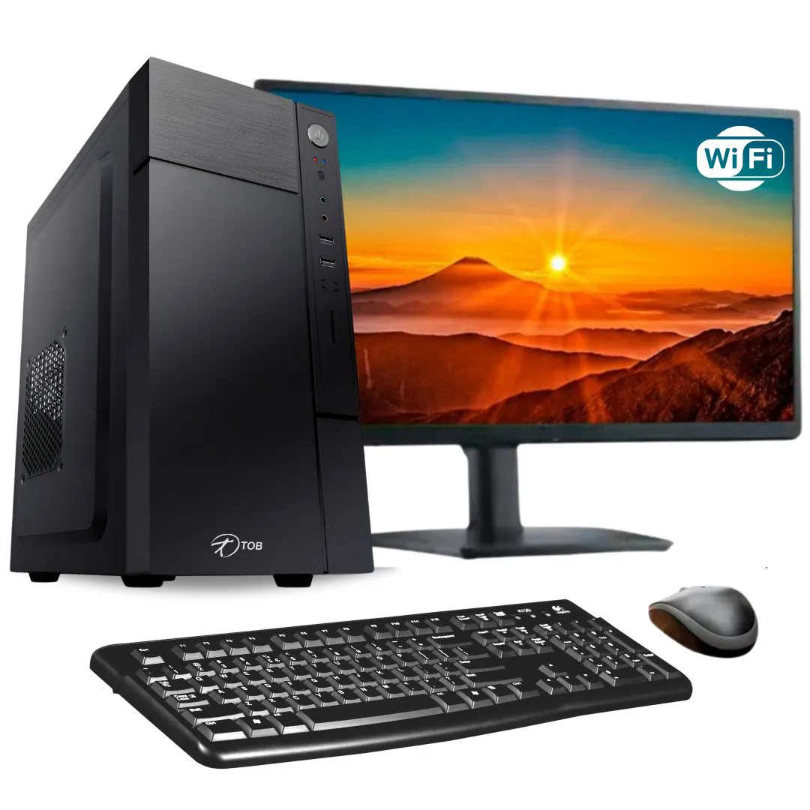

Informações Básicas
O que é um computador?
Um computador é uma máquina eletrônica que processa informações e utiliza uma gestão de tarefas para executar instruções. Ele é composto por diversos componentes internos que trabalham juntos para realizar suas funções. Abaixo estão os principais componentes de um computador:
1. Placa-Mãe(Motherboard)
A placa-mãe é o componente central de um computador. É nela que são conectados o processador, a memória RAM, a unidade de armazenamento e outros dispositivos. Ela permite a comunicação entre todos os componentes do sistema.
2. Processador(CPU)
O processador é o cérebro do computador. Ele executa as instruções dos programas, realizando cálculos e tomando decisões com base nos dados recebidos. Sua velocidade e número de núcleos influenciam diretamente no desempenho da máquina.
3. Memória RAM
A memória RAM é responsável por armazenar temporariamente os dados que o processador está utilizando no momento. Quanto maior a RAM, mais programas e tarefas podem ser executados ao mesmo tempo, melhorando a performance do sistema.
4. armazenamento (HD/SSD)
O armazenamento é onde os dados e arquivos são guardados permanentemente. Os HDs (discos rígidos) oferecem maior capacidade por um custo menor, enquanto os SSDs (unidades de estado sólido) são mais rápidos e confiáveis.
5. PLACA DE VÍDEO (GPU)
A placa de vídeo é responsável pelo processamento gráfico. Ela é essencial para jogos, modelagem 3D, edição de vídeo e tarefas que exigem alto desempenho visual. Pode ser integrada (na placa-mãe ou processador) ou dedicada (com hardware próprio).
6. FONTE DE ALIMENTAÇÃO (PSU)
A fonte de alimentação converte a energia elétrica da tomada em energia utilizável pelos componentes do computador. Ela deve ser dimensionada de acordo com o consumo dos componentes para garantir estabilidade e segurança.
7. GABINETE
O gabinete é a estrutura que abriga todos os componentes do computador. Além de proteção física, ele também influencia na ventilação, organização dos cabos e até na estética do sistema.
8. SISTEMA DE RESFRIAMENTO
O sistema de resfriamento (coolers, dissipadores e, em alguns casos, sistemas de resfriamento líquido) evita o superaquecimento dos componentes, garantindo o desempenho ideal e a longevidade do hardware.
Informações Avançadas
Placa-Mãe(Motherboard)
Chipset
O chipset é um conjunto de chips da placa-mãe que gerencia a comunicação entre o processador (CPU), a memória RAM, o armazenamento (HD/SSD), a placa de vídeo (GPU) e outros componentes, que serão explicados ao longo do texto. Se o processador é o cérebro do PC, o chipset é o sistema nervoso, garantindo que tudo funcione corretamente e na velocidade certa. O chipset geralmente fica localizado perto dos slots PCIe e dos conectores de armazenamento. Ele costuma ter um dissipador de calor para evitar superaquecimento.
Cada fabricante de processador (Intel e AMD) tem suas próprias séries de chipsets, que variam em funcionalidades e preço. Exemplos: Intel Z790 → Série Z (topo de linha), compatível com overclock. Intel B760 → Série B (intermediário), sem suporte a overclock. Intel H610 → Série H (básico), menos conectividade e sem overclock. AMD X670 → Série X (topo de linha), suporte completo a overclock e PCIe 5.0. AMD B650 → Série B (intermediário), bom custo-benefício. AMD A620 → Série A (básico), sem suporte a overclock e PCIe 5.0.
A placa mãe suporta determinados processadores, variando entre diferentes modelos e gerações, dependendo do soquete e chipset utilizado. Além disso, a quantidade e o tipo de memória RAM suportada podem influenciar diretamente no desempenho. Por fim, a capacidade de overclock depende do chipset da placa-mãe, sendo que modelos desbloqueados permitem ajustes avançados no desempenho do processador e da memória.
PCle
O que é: PCIe (ou PCI Express) é uma tecnologia usada para conectar vários componentes de um computador, como placas de vídeo, placas de som, placas de rede e SSDs (discos rígidos de estado sólido) em que o número de portas SATA e M.2 influencia a capacidade de armazenamento. O PCIe é como uma "rodovia" que permite que esses componentes se comuniquem com o processador e a memória do computador de forma rápida e eficiente.
Propriedades e Velocidade: O PCIe tem diferentes linhas (lanes) que ajudam a transmitir dados. Cada linha é como uma via de uma estrada, e quanto mais linhas, maior a capacidade de transferência de dados. O PCIe usa diferentes versões, como PCIe 3.0, PCIe 4.0 e PCIe 5.0, sendo que as versões mais recentes oferecem velocidades de transmissão de dados mais altas. A versão mais comum atualmente é o PCIe 3.0, mas a PCIe 4.0 e 5.0 estão se tornando mais populares, especialmente para placas de vídeo e SSDs mais rápidos.
Tamanhos (Slots): O PCIe vem em diferentes tamanhos de slots, e cada tipo de slot é usado para diferentes dispositivos. Os dois principais tipos de slots são:
X1: O menor, com uma linha de dados. É usado para placas de rede e outros dispositivos de baixo desempenho. X16: O maior, com 16 linhas de dados. É utilizado principalmente para placas de vídeo, que exigem uma grande largura de banda para transferir grandes quantidades de dados rapidamente, como jogos e aplicativos gráficos pesados.